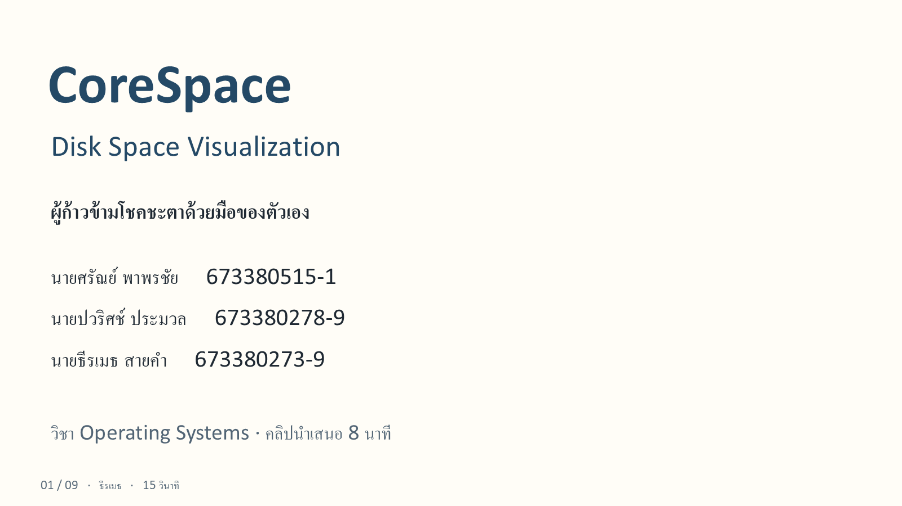

บทพูดหน้า 1
หน้าปก **ธีรเมธ · 15 วินาที** สวัสดีครับ กลุ่มผู้ก้าวข้ามโชคชะตาด้วยมือของตัวเอง วันนี้นำเสนอ CoreSpace หัวข้อ Disk Space Visualization ครับ งานนี้ใช้ความรู้ OS อ่านข้อมูลไฟล์แล้วแสดงพื้นที่ผ่านเว็บ โดยมีศรัณย์ทำ C ปวริศช์ทำ Python และผมทำหน้าเว็บครับ บนหน้าปกใส่สมาชิกครบ โดยศรัณย์ใช้รหัส **673380515-1** ปวริศช์ **673380278-9** และธีรเมธ **673380273-9** ไม่ต้องอ่านรหัสทุกคนออกเสียง หลักฐาน: docs/results/UX_CITY_UAT.md; docs/results/READABLE_FILES_FIX.md; docs/results/REAL_SCANNER_INTEGRATION.md